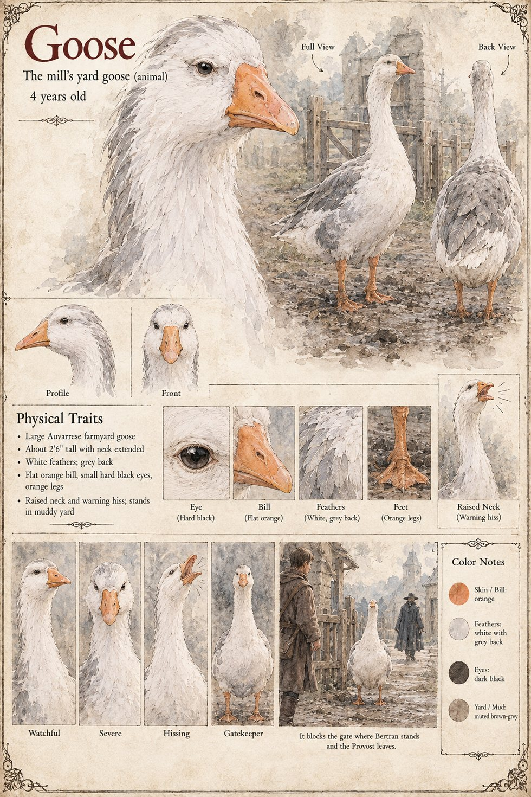

The Goose
The yard goose of the Mill of the Two Weirs · 4 years old by its sheet
The mill's yard goose, which has a view of the world that Ottavio Brandi finds presumptuous. On the night of the first of Iverin, when he walks down the lane to present the Order's roll to a stranger through the mouth of a sixteen-year-old miller's daughter, it is in his way at the gate when he leaves, and he stops; the clerk Matteo, waiting by the lantern, says in a low voice that it will be all right, sir. “It will be entered,” says the Provost, and walks up the lane in the dark. He has been cold since the tenth of Garren, and he does not yet know why.
On the evening of the second it comes out again, and regards Sir Bertran de Lanta, who has come down the lane as far as the gate with the first of his pearwood horses in his fist and no idea how to knock. He stands there for as long as it takes a bell to ring Prime, with the kitchen's lamplight on the gravel at his boots, and goes back up the lane. It takes no side. The manuscript gives it no sex, colour or build. The sheet's four years, large white body with a grey back, flat orange bill, small hard black eyes, orange legs, raised neck and hiss are its own, and its captions, Watchful, Severe, Hissing, Gatekeeper, are the nearest the file comes to its opinion of any of it.